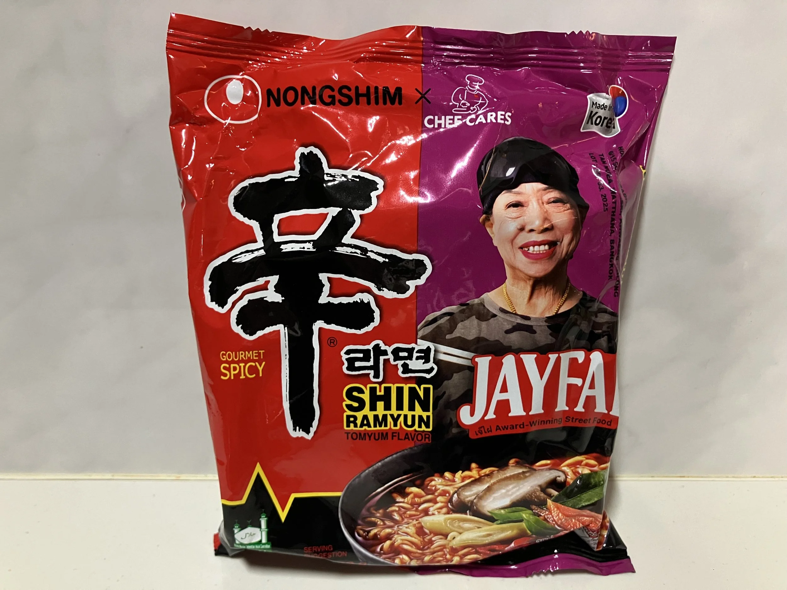
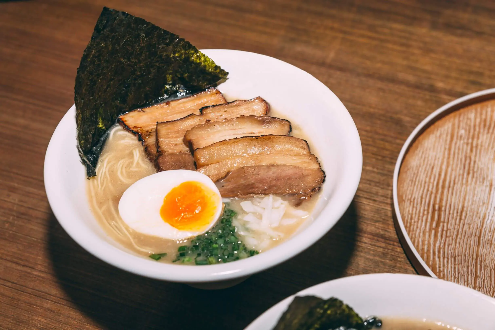

If you have visited Bangkok or watched any “best food in Bangkok” video on YouTube, you will come across a lady named Jay Fai. Jay Fai is a Michelin-starred street food legend in Bangkok, known for her crab omelette and fiery wok skills. Her fame skyrocketed after appearing in Netflix’s Street Food series and hosting global personalities, actors and musicians. Apparently Nongshim visited Jay Fai’s restaurant multiple times to get the flavor right for this collaboration. Even though Tom Yum isn’t the thing that Jay Fai is famous for, it is probably one of the easier combinable flavors with the original flavors of Nongshim Shin Ramyun...
Last updated 3 days ago
Go somewhereI’m very excited about this one – so first off, it is looking like you can only get it from Albertson’s chain store like Safeway, Von’s, Jewel Osco, etc. Second, my son Miles spotted it in our local Safeway. He’s been really keen on doing mukbang lately and trying these variants. What’s a surprise is that he’s autistic and always been very particular about what he eats – never eating hot food, nothing squishy and chewy… That all changed – he’s actually eating this stuff – he even voiced interest in Cheetos mac and cheese. While not the most healthy stuff out there, he’s exploring new foods and that’s a big deal. Anyways, this is new and so I’m rushing it out. It should be noted that birria is primarily beef, goat, or sheep meat and the idea of chicken birria tends to be pretty unheard of in research I’ve done. Let’s go! There will be a cooking video below as well as a mukbang with Miles....
Last updated 8 days ago
Go somewhere
Noodles are also an important part of Japanese cuisine. Not only are they a Japanese staple, but different types of noodles are also enjoyed for certain celebrations and during specific seasons. Ramen, soba, and udon noodles are some of the most recognizable Japanese noodles. These noodles are amazing when enjoyed fresh, but they can also be found dried in supermarkets and convenience stores. From hot soups to chilled noodles, tons of dishes are associated with each of Japan’s noodles. Check out this guide to three of our favorite types of Japanese noodles and the different dishes that highlight them....
Last updated 3 days ago
Go somewhere